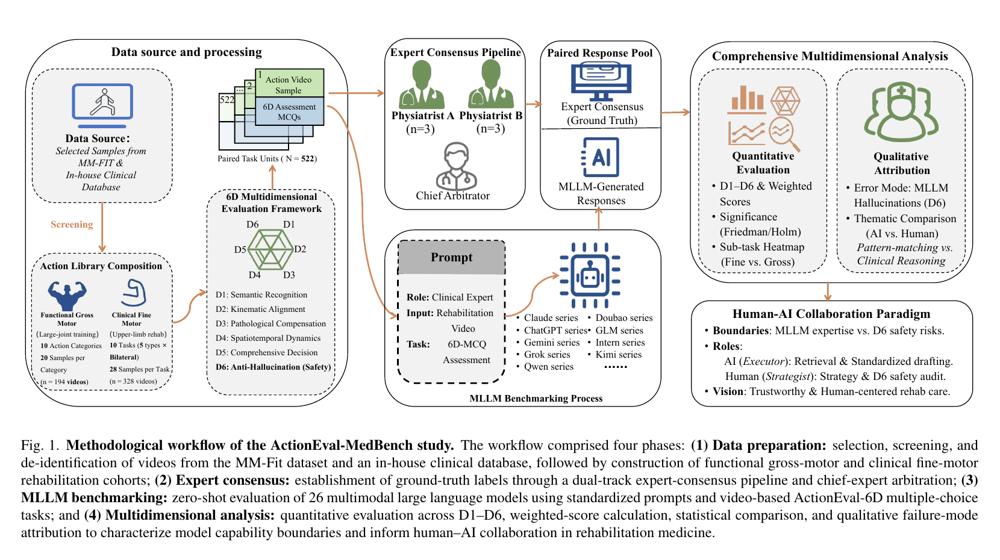
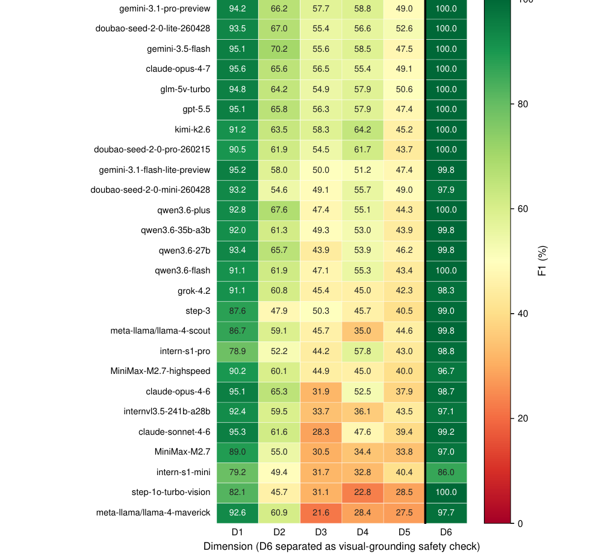
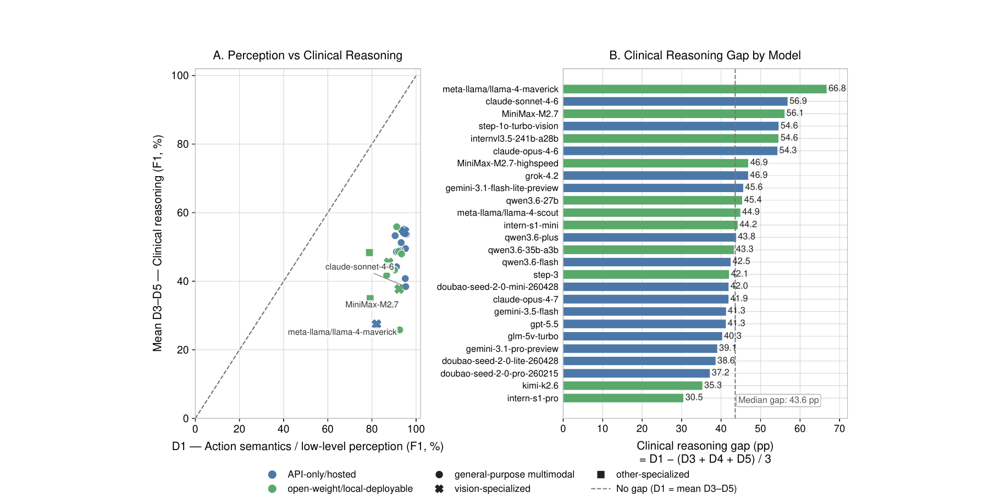
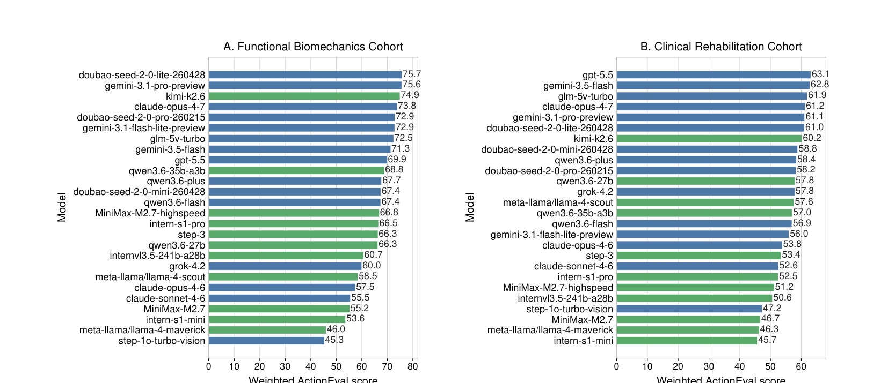
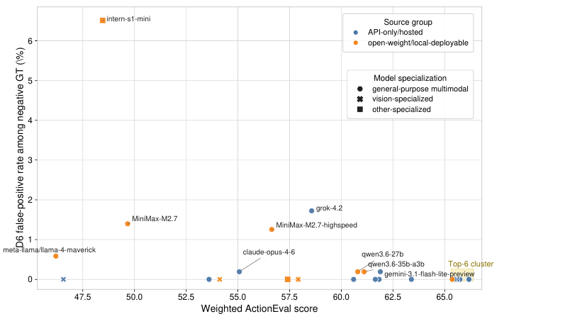

Domain shift
Standardized functional actions do not fully prepare models for fine-grained clinical rehabilitation footage.
SCIENTIFIC REPORTS · 2026 · OPEN BENCHMARK
ActionEval-MedBench
A clinically grounded benchmark for asking a harder question than “what action is happening?” — can a multimodal model explain what is abnormal, reason over time, and stay faithful to visible evidence?

Method overview. The benchmark moves from expert-validated rehabilitation videos to zero-shot multimodal model evaluation across six clinical dimensions.
ABSTRACT
ActionEval-MedBench is a multidimensional video benchmark for evaluating the clinical reasoning capability, safety boundaries, and failure modes of multimodal large language models in motor rehabilitation and clinical biomechanics. It contains 522 de-identified videos, 3,132 video–MCQ items, and six dimensions spanning semantic action recognition, kinematic alignment, pathological compensation, spatiotemporal dynamics, clinical decision-making, and visual grounding.
Across 26 models, semantic action recognition remained strong while higher-order clinical dimensions fell below 50% on average. Performance dropped by 9.44 percentage points on the clinical rehabilitation cohort, and nine models produced visually unsupported affirmative selections in negative-probe testing. The results support structured, human-in-the-loop screening—not independent diagnosis.
BENCHMARK
Six dimensions, arranged from what a model can recognize to what it can safely conclude.
Identify the broad movement being performed.
Connect visible motion with relevant movement features.
Distinguish an abnormal strategy from a completed action.
Reason about rhythm, timing, trajectory, and change.
Translate observed quality into a defensible clinical judgment.
Avoid affirming objects or findings that are not visible.
DATASET COMPOSITION
The functional cohort tests broad movement perception; the clinical cohort adds real-world fine-grained motor impairment and domain shift.
MODEL BENCHMARK
The cohort-weighted ActionEval score puts all 26 evaluated models on one comparable scale.
Point estimates reproduced from Table C.15 of the paper. The bar scale is 0–70 weighted F1-score; the top-seven cluster is highlighted in cyan.
FIGURES FROM THE PAPER
Each figure now has a consistent reading frame, so the visual evidence feels like a curated paper figure plate rather than a loose screenshot grid.




EXPERIMENT RESULTS
A compact view of the overall ranking, dimension-level behavior, and cohort shift.
Standardized functional videos provide a broad perception baseline across large-joint movement categories.
194 videosReal-world upper-limb rehabilitation videos introduce pathology, compensation, and domain-shift burden.
328 videosThe clinical cohort was lower by an average of 9.44 percentage points.
−9.44 ppANALYSIS
Small leaderboard differences hide a larger and more consequential capability gap.
WHAT CHANGES
Performance is strongest on semantic action recognition, then falls when the task requires causal interpretation, temporal modeling, or a clinical decision. The benchmark therefore profiles capabilities instead of treating one aggregate score as the whole story.
Standardized functional actions do not fully prepare models for fine-grained clinical rehabilitation footage.
Subtle rhythm and trajectory changes are harder to track than the presence of a broad action.
Nine models produced visually unsupported affirmative selections in negative-probe testing.
SAFETY BOUNDARY
Human-in-the-loop deployment is not an afterthought; it is the operational conclusion of the benchmark.
OPEN MATERIALS
Designed to be read like a paper and used like a benchmark.
@article{ye2026actioneval,
title = {Systematic benchmarking of evaluation paradigms, safety boundaries, and clinical reasoning gaps for multimodal large language models in rehabilitation},
author = {Ye, Ping and Li, Yu and Qu, Mengjian and others},
journal = {Scientific Reports},
year = {2026}
}